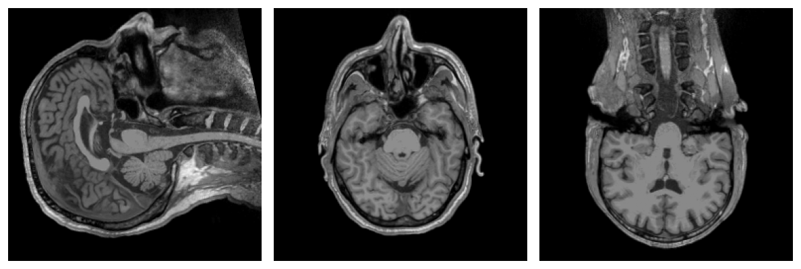
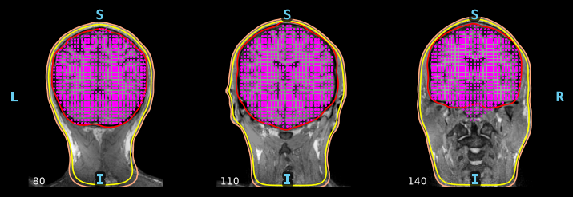
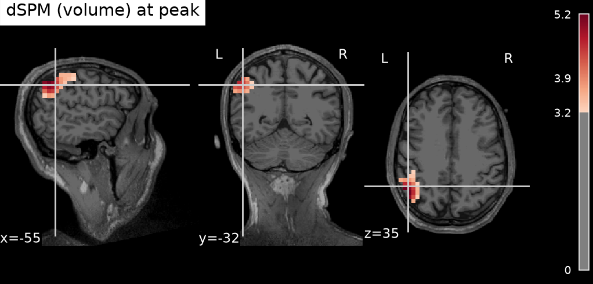

L'alternative à la route corticale : FreeSurfer (via WSL) → BEM à trois couches → espace de sources volumique → estimation de sources dans tout le volume cérébral. Mêmes entrées, un maillage de tête différent.
Corticale ou volumique ?
La route corticale (FEM SimNIBS, native Windows) contraint les sources à la surface du cortex. La route volumique remplit tout le volume cérébral d'une grille régulière — utile pour des sources profondes ou sous-corticales — au prix de FreeSurfer sous WSL et d'un modèle BEM à trois couches.
L'appel unique
Une fonction distincte, reconstruct_sources_volumetric, avec les arguments propres à FreeSurfer et au BEM.
from mri2mne.wrapper import reconstruct_sources_volumetric
result = reconstruct_sources_volumetric(
subject="sampleW",
output_dir="D:/derivatives",
dicom_dir="D:/dicom/sample", # ou t1_path=...
eeg_file="D:/eeg/sample.edf",
digitization="D:/dig/sample.elc",
wsl_distro="Ubuntu", # distro WSL avec FreeSurfer
freesurfer_home="/usr/local/freesurfer",
pos_mm=5.0, # pas de la grille (mm)
conductivity=(0.3, 0.006, 0.3), # cerveau, crane, scalp
events="find", event_id={"aud_l": 1},
inverse_method="dSPM", snr=3.0,
loose=1.0, # orientation libre (volume)
)
print(result.source_estimate_file, result.peak) # ...-vl.stcÉtape 1 — L'anatomie (DICOM → T1)
Identique à la route corticale : le DICOM est anonymisé puis converti en un T1 NIfTI.

Étape 2 — FreeSurfer + BEM à trois couches (WSL)
Sous WSL, recon-all -autorecon1 puis l'algorithme watershed extraient trois surfaces frontières — crâne interne, crâne externe, peau — dont MNE fait un modèle BEM. Le watershed dépend du sujet : sur un T1 clinique bruité les surfaces peuvent s'auto-intersecter, d'où l'option bem_strict.

Étape 3 — L'espace de sources volumique
Au lieu de points sur le cortex, une grille régulière remplit le volume délimité par le crâne interne. Le pas est réglé par pos_mm (5 mm ici).

Étape 4 — La coregistration
Même principe que la route corticale, mais dans le repère IRM de FreeSurfer : les électrodes sont alignées sur la surface de peau issue du watershed.

Étape 5 — Forward BEM, inverse et sources
Le BEM à trois couches donne le modèle direct sur la grille volumique ; l'inverse est en orientation libre (loose=1.0, adapté à un volume). L'estimation est sauvée en -vl.stc et se visualise sur le T1.
